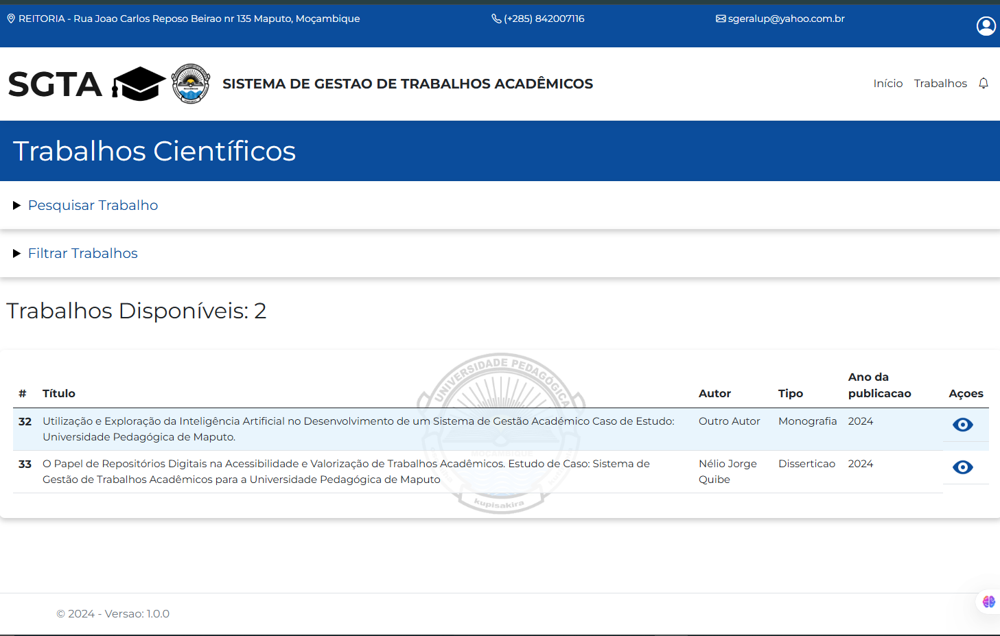
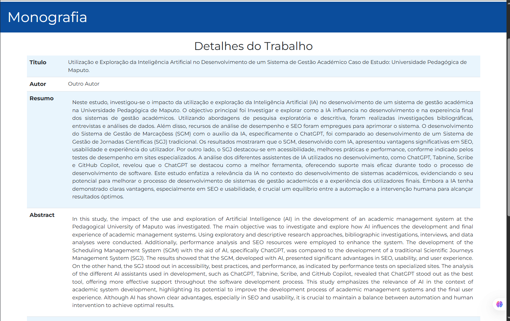
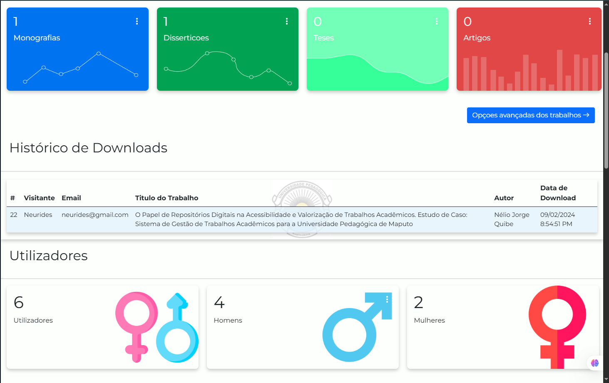

SGTA
Sistema de Gestão de Trabalhos Académicos e Repositório Digital Institucional




Contexto e Desafio
Muitas instituições de ensino superior não possuem um repositório digital centralizado para armazenar e disponibilizar trabalhos académicos, como monografias, teses, artigos científicos e publicações institucionais. Como resultado, grande parte do conhecimento produzido é perdido ou difícil de consultar, limitando a referência metodológica e estrutural para novos estudantes.
Solução Desenvolvida
O SGTA foi concebido como uma plataforma digital institucional que organiza, armazena e disponibiliza trabalhos académicos. O sistema permite filtragem por área científica, curso, autor e ano, tornando a pesquisa rápida e eficiente para estudantes, docentes e investigadores.
O Meu Papel
O SGTA foi desenvolvido como projeto académico durante a Licenciatura em Informática, com o objetivo de aplicar conhecimentos em desenvolvimento web, modelação de bases de dados e engenharia de software. Participei no desenho da solução, implementação das funcionalidades principais, desenvolvimento do backend, modelação da base de dados e construção da interface web.
Funcionalidades Principais
- Gestão de repositório institucional
- Registo e armazenamento de artigos, monografias e teses
- Catalogação por área científica, curso e autor
- Upload e download de ficheiros digitais
- Envio de trabalhos por email
- Pesquisa avançada por autor, área, curso ou palavra-chave
Funcionalidades Avançadas
- Histórico de downloads de trabalhos
- Registo de utilizadores que acederam aos documentos
- Estatísticas de trabalhos mais consultados
- Auditoria completa de operações do sistema
- Histórico de alterações em documentos
- Sistema de pedido de suporte técnico e mensagens internas
- Broadcast de mensagens para equipa técnica